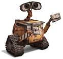
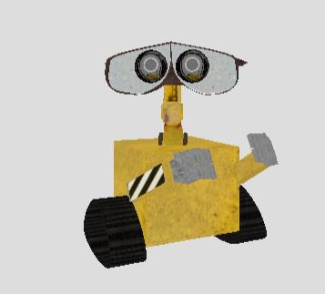
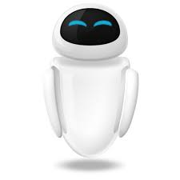
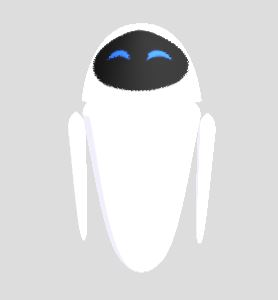
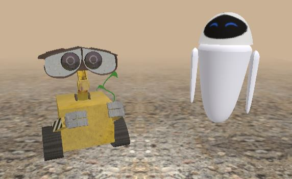
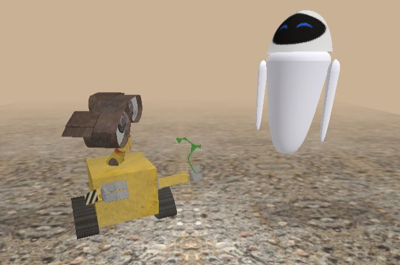
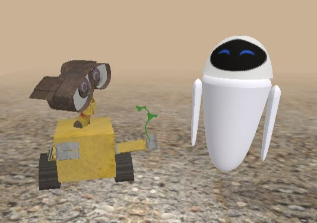

This is a scene inspired by Wall-E an animated film produced by Pixar Animation Studios.
I closely examined different Wall-E images that I could find online and attempted to replicate his geometry as accurately as I could. I spent the most time on creating his eyes, especially on recreating the different eye details out of extruded geomteries and bezier surfaces. I also attempted to make the eyes lively and animated. To achieve this affect I used the marble.js code from the library but instead of creating a mirror ball I created 2 glass balls that serve as Well-E's eyes and continuously relfect the scene. Creating Eve did not took as long because she has fewer details and the material of her character is rather uniform and easy to recreate. I used several bezier surfaces to model her character, as well texture mapping for her face.
   I mapped various kinds of metallic textures on Wall-E's parts to achieve a similar kind of grunge feel of his character that the viewers witness in the actual film.
In the scene Wall-E is animated to turn his head towards Eve, hand her the stem and tilt his head just like he does so many times in the film. As a response, Eve swirls up and down.
Wall-E's preparing to give the stem to Eve
Wall-E's handing the stem to Eve and she swirls up
Wall-E has handed the stem to Eve
Press g to start the animation.
Press s to stop the animation.
Press 0 to restart the animation.